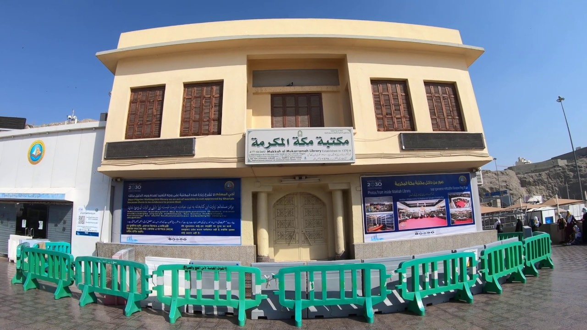
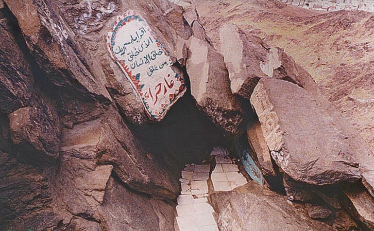
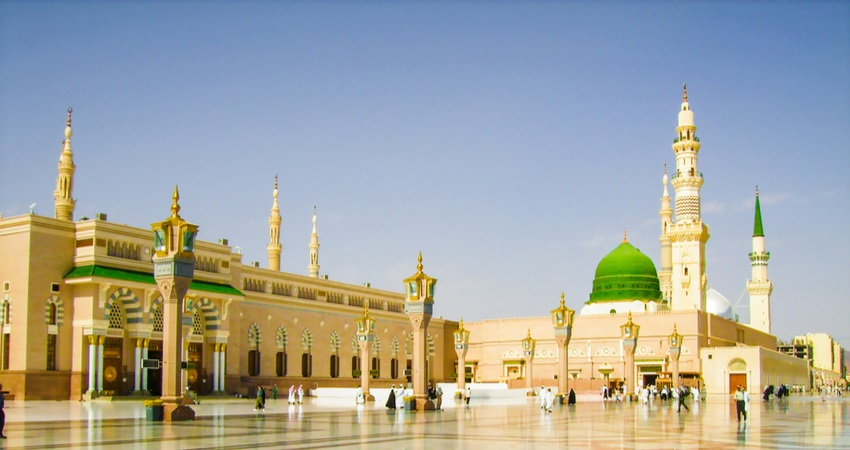
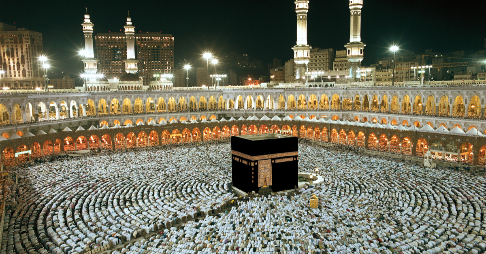
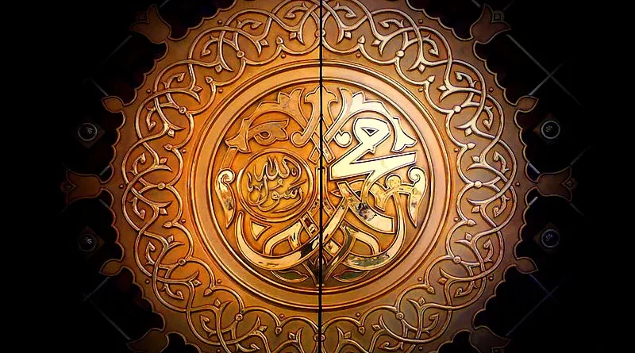

Birth of Prophet Muhammad (S.A.W.)
Prophet Muhammad (S.A.W.) was born in Makkah in the year 570 CE. He was born into the respected tribe of Quraysh, and his early life was marked by simplicity and honesty, earning him the title of 'Al-Amin' (The Trustworthy) among his people.
The First Revelation
At the age of 40, while meditating in the Cave of Hira, the first revelation from Allah was revealed to Prophet Muhammad (S.A.W.) through the angel Jibreel (Gabriel). This marked the beginning of his Prophethood and the message of Islam.
Migration to Madinah (Hijrah)
Due to persecution in Makkah, Prophet Muhammad (S.A.W.) and his followers migrated to Madinah in 622 CE. This event, known as the Hijrah, is one of the most significant events in Islamic history and marks the start of the Islamic calendar.
Conquest of Makkah
In the year 630 CE, Prophet Muhammad (S.A.W.) led a peaceful conquest of Makkah, entering the city without bloodshed and forgiving its people. This event solidified Islam's place in the Arabian Peninsula.
Khatam E Nabuwat
Prophet Muhammad (S.A.W.) is regarded as the last and final prophet, sealing the line of Prophethood with the message of Islam. The concept of Khatam E Nabuwat is an integral belief, emphasizing that no prophet will come after him.
The Farewell Sermon (Khutbat-ul-Wada)
In the year 632 CE, during his final pilgrimage, Prophet Muhammad (S.A.W.) delivered his famous Farewell Sermon at Mount Arafat. In this sermon, he emphasized equality, justice, and the importance of following the teachings of Islam. This sermon stands as a vital part of Islamic teachings.